Help - ekran za editovanje
Ekran za editovanje predstavlja početni ekran aplikacije preko kojeg je moguće učitati .ass datoteku, pregledati je, i vršiti neke izmene na njoj bilo direktno, bilo izborom linije prevoda i pokretanjem ekrana za prevođenje. Izgled početnog ekrana po startovanju aplikacije je dat na slici 1.
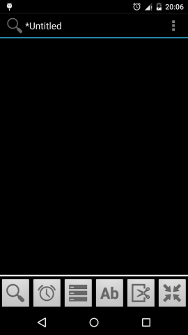
Slika 1. Početni ekran aplikacije - ekran za editovanje
Na ekranu za editovanje se nalaze tri glavna dela:
- Naslovna linija - prikazuje ime trenutno otvorenog prevoda, kao i dugme za prikaz glavnog menija.
- Centralni deo - prikazuje linije prevoda (na početku prazan)
- Glavne kontrole - služe za prikaz/skrivanje nekoliko odeljaka sa različitim opcijama/alatima za rad sa prevodom.
1. Naslovna linija
Prikazuje ime trenutno otvorenog prevoda, kao i dugme za prikaz glavnog menija. Ukoliko je kreiran novi prevod, ime će biti "untitled" do trenutka prvog snimanja prevoda. Ukoliko su na prevodu vršene neke izmene, pored imena prevoda će se pojaviti zvezdica (*). Po snimanju izmena, zvezdica nestaje.
U desnom delu se nalazi dugme za otvaranje menija. Raspoložive stavke menija su prikazane na slici 2.
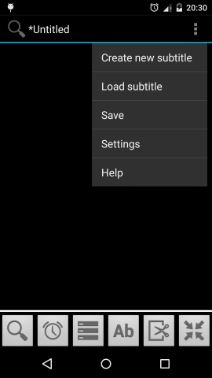
Slika 2. Otvoren meni na početnom ekranu
Stavke menija imaju sledeće funkcije:
- Create new subtitle - uklanja tekući prevod sa ekrana i otvara novi fajl. NAPOMENA: ova opcija trenutno nije funkcionalna i samo čisti tekuće otvoren prevod sa ekrana.
- Load subtitle - otvara ekran za učitavanje postojećeg prevoda. Prevod će se verovatno nalaziti na SD kartici ili delu memorije koji izigrava SD karticu kod uređaja koji istu nemaju (npr. Nexus 5). SD kartici se može (tipično) pristupiti preko prve opcije na ekranu za učitavanje prevoda, ili otvaranjem foldera sdcard ili mnt/sdcard.
- Save - snima načinjene izmene u fajl prevoda. Dokle god se ne izabere ova opcija, originalni fajl neće biti izmenjen; sve izmene se čuvaju samo unutar same aplikacije.
- Settings - otvara odeljak sa podešavanjima
- Help - otvara help odeljak
2. Centralni deo
Centralni deo prikazuje linije prevoda. Ovaj deo je prazan na početku i popunjava se tek kada se učita neki prevod korišćenjem opcije Load subtitle. Jedan primer izgleda ekrana za editovanje je dat na slici 3. Na ekranu su prikazani redovi prevoda. Svaki red prevoda ima date neke osnovne informacije. Ove informacije zavise od podešavanja načinjenih u delu sa glavnim kontrolama, što je opisano ispod. Bez obzira na podešavanja, uvek će biti prikazan broj linije prevoda i tekst prevoda; takođe, redovi prevoda koji su označeni kao komentari će biti obojeni tamno-ljubičastom bojom. Klikom na bilo koju liniju prevoda, pokrenuće se ekran za prevođenje koji će omogućiti izmenu izabrane linije (kao i drugih linija).
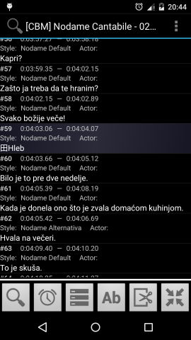
Slika 3. Početni ekran aplikacije sa učitanim prevodom; linija #59 je komentar.
3. Glavne kontrole
Glavne kontrole (slika 4) služe za prikaz/skrivanje nekoliko odeljaka sa različitim opcijama/alatima za rad sa prevodom. Svako dugme otvara jedan odeljak, osim poslednjeg, koje služi za "minimizaciju" odeljka sa kontrolama. Ova opcija je korisna ukoliko se želi bolji pregled centralnog dela sa prevodom. Od glavnih kontrola, trenutno je funkcionalna jedino prva koja dozvoljava prilagođavanje prikaza prevoda i filtriranje (pretragu) redova.
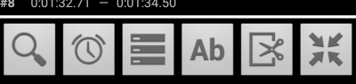
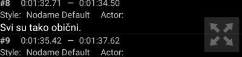
Slika 4. Glavne kontrole u maksimiziranom i minimiziranom stanju.
3.1. Odeljak za prilagođavanje prikaza / filtriranje
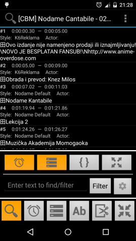
Slika 5. Odeljak za prilagođavanje prikaza / filtriranje.
Sadrži sledeće opcije:
Dugme za prikaz/skrivanje vremena - prikazuje/skriva trajanje linija prevoda.

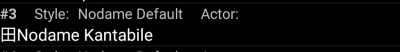
Slika 6. Prikazana / skrivena trajanja linija.
Dugme za prikaz/skrivanje stila/uloge - prikazuje/skriva stil primenjen na liniju prevoda i ulogu (ko izgovara liniju).
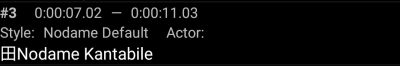
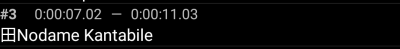
Slika 7. Prikazan / skriven stil i uloga.
Dugme za prikaz/skrivanje specijalnih tagova - prikazuje/skriva specijalne tagove iz unutar linija prevoda. Skriveni tagovi bivaju zamenjeni jednim specijalnim znakom, po defaultu "田".

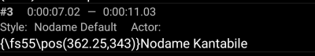
Slika 8. Skriveni / prikazani specijalni tagovi.
Dugme za prelazak u fullscreen režim - fullscreem režim obezbeđuje malo veću povšinu ekrana, te pregled više linija prevoda (pogodno za manje ekrane).
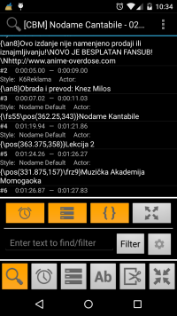
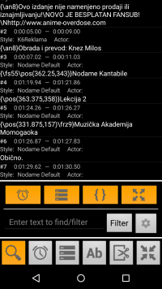
Slika 9. Običan prikaz / fullscreen prikaz.
Odeljak za filtriranje - omogućava filtriranje redova prevoda po nekom tekstu. Po unosu teksta, na centralnom ekranu će ostati samo oni redovi koji sadrže zadati tekst. Filtriranje se može dodatno podesiti klikom na dugme sa ikonicom zupčanika (slika 11)
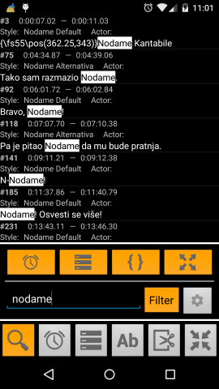
Slika 10. Filtriranje redova prevoda.
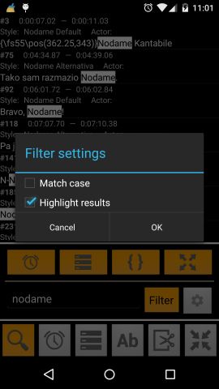
Slika 11. Podešavanje filtriranja.